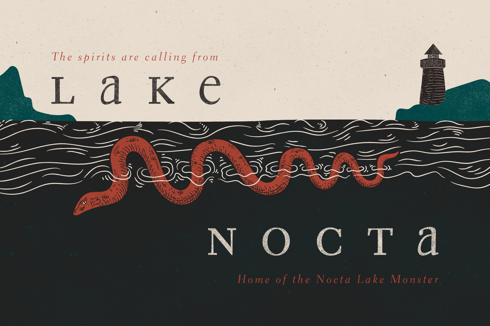

Nocta’s design stlyes serve to enhance the narrative of the site and create a more vibrant world for users to explore. The type is a key part of this system. Eidetic’s unique even x-height adds a subtle uneasiness, where broadsheet offers historical authority. Proxima nova brings a nice reliability to the body copy as well as easy readability. Muted, rich colors provide a sturdy foundation to ground the supernatural elements of the environment.
